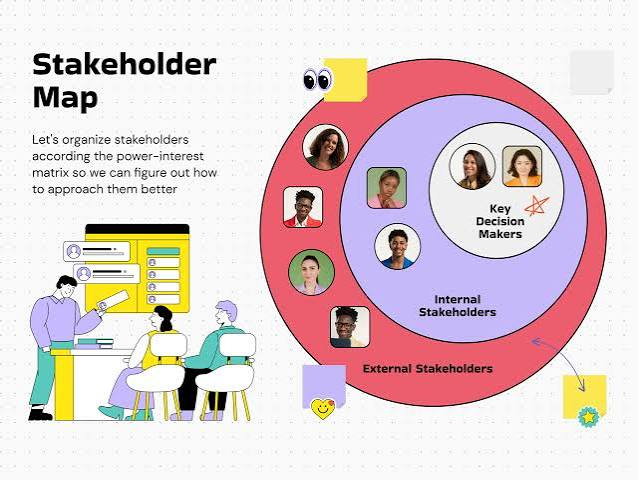

Definición de Stakeholder
Un stakeholder es cualquier individuo o entidad que tiene conexión con una organización o iniciativa. Esta conexión se da porque participa en el proyecto, se beneficia de él o puede verse afectado por las decisiones tomadas durante su ejecución.
Clasificación de Stakeholders
Se dividen en dos grupos:
- Internos: Empleados, gerencia, dueños y accionistas.
- Externos: Clientes, proveedores, gobierno y comunidad.
Requerimiento Funcional
Describe las funciones que el sistema debe realizar.
Ejemplo: El sistema debe permitir recuperar la contraseña mediante correo electrónico.
Requerimiento No Funcional
Define la calidad y el rendimiento del sistema.
Ejemplo: El sistema debe responder en menos de un segundo.
Requisitos No Funcionales (RFN)
| RFN | ¿Qué es? | Ejemplo |
|---|---|---|
| Rendimiento | Velocidad del sistema. | La aplicación carga en 2 segundos. |
| Seguridad | Protección de datos. | Contraseñas encriptadas. |
| Usabilidad | Facilidad de uso. | Comprar en menos de 3 clics. |
| Accesibilidad | Uso para personas con discapacidad. | Compatible con lectores de pantalla. |
| Disponibilidad | Tiempo activo del sistema. | 99.9 % del tiempo. |
| Escalabilidad | Capacidad de crecer. | Soportar miles de usuarios. |
| Mantenibilidad | Facilidad para corregir errores. | Resolver fallos en menos de 4 horas. |
| Portabilidad | Funciona en diferentes dispositivos. | PC, celular y tablet. |
| Compatibilidad | Integración con otros sistemas. | Pasarela de pagos. |
| Confiabilidad | Trabaja sin fallos. | No perder información. |
| Restricciones tecnológicas | Reglas técnicas. | Usar Node.js y React. |